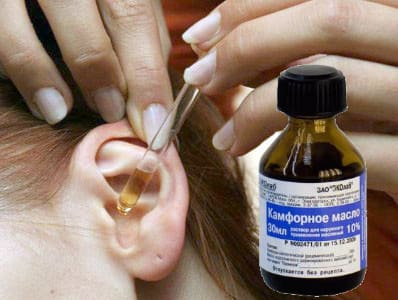
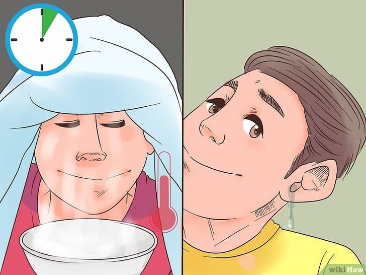

Один отец, который вместе со своим ребенком частенько посещает мой кабинет по поводу среднего отита, во время последнего визита начал так: «Уши моего ребенка – самая дорогая для меня часть его тела». Верно, платить за лечение приходится немало, но если вы подумаете о том, что здоровые уши – залог нормального слуха и речи, цена хорошей заботы о них не покажется вам такой уж высокой.
Профессия врача и родителя требует отказаться от права на полноценный ночной сон. Но очень редко бывает необходимость консультироваться с врачом посреди ночи, если ваш ребенок проснулся с болью в ухе, если только он не серьезно болен. Единственное лечение, которое может назначить вам врач и которое вы не можете провести сами, – это антибиотики, но они не снимают боль незамедлительно. Кроме того, вы вряд ли найдете открытую аптеку спозаранку.
Применяйте эти ночные средства для снятия боли, пока не свяжетесь со своим врачом следующим утром. Вы также можете использовать их в течение дня, пока прописанные антибиотики не оказали действия.
• Дайте ребенку ацетаминофен или ибупрофен. Первую дозу можно и нужно удвоить.
• Отлейте немного кулинарного масла, например растительного или оливкового, в небольшой стакан и подогрейте, поставив стакан в теплую воду. Закапайте несколько капель в больное ухо. Помассируйте внешний конец наружного слухового прохода, чтобы капли протекли до барабанной перепонки и сняли боль.

• Если отит случается у вашего ребенка часто, держите под рукой отпускаемые по рецепту обезболивающие капли «Auralgan».
• Уложите ребенка больным ухом вверх или усадите его вертикально и постарайтесь помочь ему уснуть в этом положении. Возможно, будет нужно, чтобы вы сели, обложившись подушками, в кровати и уложили ребенка спать у себя на груди, приложив здоровое ухо к вашей груди, а больное направив вверх.
• Чтобы способствовать оттоку секрета из носовых ходов (и, возможно, из евстахиевых труб), устройте ребенку паровую ванну.

Марта, Уильям, Роберт, Джеймс Сирс"Ваш малыш от рождения до двух лет"